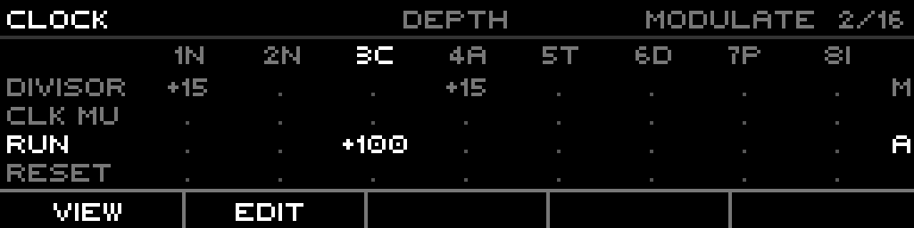
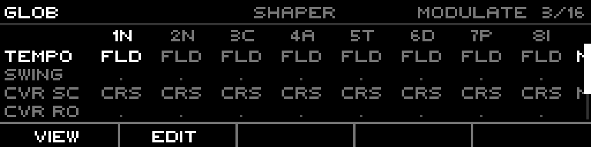
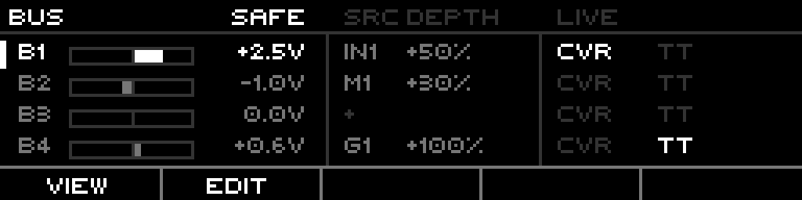

Routing is the modulation matrix: it maps a source — a CV input, a bus, a modulator, another output — onto a target parameter, recomputed every engine frame. One route is one source→target wire with its own depth, bias, shaper, and combine mode. Up to 16 routes live in a project; the page shows them as a scrollable grid of params × tracks, plus dedicated BUS and MIDI tabs.
A route does not replace a parameter's value — it shapes the live source and adds the result on top of the edited base. The source runs through Bias, Depth, and an optional Shaper before it lands. Two combine modes decide whether the source modulates around the base (centered, bipolar) or sweeps the base from one end of the param's range to the other.
Everything here is grounded in the firmware as built — defaults, ranges, enum members, key bindings, and target families come from the model, engine, and UI code.
Prerequisites
Familiarity with the xformer track/sequence/edit page model (Page+S2 / Page+S1 / Page+S0).
Understanding of CV/gate concepts in modular synthesis (1V/oct, ±5V).
A parameter you want to modulate, and a source (CV input, modulator, bus, or output) to drive it.
Part 1 · Overview
A route holds:
Target — what it drives (a param family member, Part 2).
Source — what drives it (CV In, CV Out, Bus, Gate Out, Mod, MIDI).
Tracks — for per-track targets, the bitmask of tracks the route applies to.
Min / Max — the param-value window the source spans.
Depth (per track, −100..+100%) — how hard the shaped source pushes.
Bias (per track, −75..+75%) — offsets the source before depth.
Shaper (per track) — an optional waveshape on the source.
Combine — Modulate (centered) or Absolute (sweep from base).
Scale source — a second source that dynamically scales the depth.
Two scopes of target.Global targets (Tempo, Swing, the CV-router controls, the four buses) have no track dimension — one value, one route. Per-track targets (Run, Reset, Transpose, Divisor, the engine params) carry an 8-bit track mask: one route can drive several tracks at once, with an independent depth per track.
Where routes live. All 16 routes live on the project, not on any track — a route survives pattern and track changes. The routed value is recomputed every frame from the live source and written as a transient override; the edited base value is never overwritten.
Part 2 · Targets
A target is the parameter a route drives. They group into families; each member has a value range and a default route window. Ranges below come from the firmware's target-info table.
Engine / transport
Target
Range
Notes
Play
off/on
start playback
Play Toggle
off/on
toggle play (conflicts with Play)
Record
off/on
arm record
Record Toggle
off/on
toggle record (conflicts with Record)
Tap Tempo
off/on
tap
Project global
Target
Range
Default window
Tempo
1..1000 BPM
100..200
Swing
50..75%
50..75
CVR Scan
0..100%
0..100
CVR Route
0..100%
0..100
Play-state per track
Target
Range
Mute
off/on
Fill
off/on
Fill Amount
0..100%
Pattern
1..16
Track per track
Target
Range
Default window
Run
off/on
—
Reset
off/on
—
Slide Time
0..100%
0..100
Octave
−10..+10
−1..+1
Transpose
−60..+60
−12..+12
Offset
−5.00..+5.00V
−1.00..+1.00V
Rotate
−64..+64
0..64
Gate P. Bias
−8..+8
full
Retrig P. Bias
−8..+8
full
Length Bias
−8..+8
full
Note P. Bias
−8..+8
full
Shape P. Bias
−8..+8
full
CV Out Rot
−8..+8
0..8
Gate Out Rot
−8..+8
0..8
Sequence per track
Target
Range
Default window
First Step
1..64
full
Last Step
1..64
full
Run Mode
0..5 (Fwd..Random)
full
Divisor
1..768
6..24
Clock Mult
50..150%
full
Phase
0..1
—
Scale
0..MaxCount
full
Root Note
0..11
full
Bus global
Target
Range
BUS 1
−5.00..+5.00V
BUS 2
−5.00..+5.00V
BUS 3
−5.00..+5.00V
BUS 4
−5.00..+5.00V
The buses are engine-owned ±5V CV rails. A route can write a bus; another route can read that same bus as a source — that is how routing chains across the matrix.
Engine families per track
Each track engine exposes its own routable params on a dedicated tab (NOTE / PHASEFLUX / CURVE / TUESDAY / DISCMAP / INDEXED / STOCH / FRACTAL):
Conflicts are guarded. Two routes can't drive the same target (same track, for per-track targets). Play/Play-Toggle and Record/Record-Toggle are mutually exclusive. The editor refuses the second.
Part 3 · Sources
A source is what drives the route. The picker offers every member of the source enum in order, skipping only the bus that would self-route the target.
Family
Members
Abbrev
Reads
CV In
1-4
IN1-4
the panel CV inputs, raw volts (1V/oct)
CV Out
1-8
O1-8
the eight CV outputs, post-engine
Bus
1-4
B1-4
the four ±5V engine buses
MIDI
—
—
a configured MIDI event (Part 6)
Gate Out
1-8
G1-8
the eight gate outputs (0/1)
Mod
1-8
M1-8
the eight modulators, 0..127 mapped to ±5V
None is a valid source — a route with no source is inert until you pick one.
Self-route is blocked. A bus source feeding the same bus target is refused; the encoder skips over it, and setting it directly snaps the source to None.
CV source range. A CV-In source carries a voltage range (default Bipolar ±5V). It sets how the raw input voltage normalizes into the route's 0..1 working value.
Part 4 · Bias / Depth / Shaper / Combine
A route does not just copy a source onto a param. It runs the source through a fixed pipeline.
Normalize — the raw source becomes a 0..1 working value (a CV input uses its voltage range; a Mod scales 0..127 → 0..1).
Bias (−75..+75%) — offsets the working value before depth. Re-centers an asymmetric source.
Shaper — an optional waveshape. On the routing lane the live shapers are the stateless folds.
Token
Shaper
FLD
Triangle fold (center 0.5)
F30
Triangle fold, center 0.3
F70
Triangle fold, center 0.7
CRS
Crease (threshold 0.5)
C10
Crease, threshold 0.1
C90
Crease, threshold 0.9
Scale source — an optional second source multiplies the depth dynamically (None = identity gain of 1.0).
Depth (−100..+100%) — how far the shaped source travels. Negative inverts.
Combine — how the result lands on the param.
Modulate vs Absolute
The combine mode is the headline of how a route feels:
Modulate (default) — the source is centered: a half-scale source produces zero change, full produces ±depth around the base. Neutral at source-center, bipolar. The base value still matters; the route wiggles around it.
Absolute — the source sweeps from the base: source 0 leaves the base untouched, source 1 pushes a full depth×range travel in one direction. The base is the floor; the source pulls it up.
Depth is the modulation amount for Modulate, and the travel span for Absolute. Routing depth scales to the destination's value range — +50% on Transpose is a larger pitch swing than +50% on Octave because the ranges differ.
Part 5 · The Routing page
The routing page is a modal tab editor. A static tab ring runs across the top; Left/Right cycle the tabs. Each tab is a scrollable grid: param rows × 8 track columns. The grid cell shows, per the active view, the row's source, depth, scale, or shaper for that track.
The tabs
The ring, in order: PITCH · CLOCK · GLOB · NOTE · PHASEFLUX · CURVE · TUESDAY · DISCMAP · INDEXED · STOCH · FRACTAL · BUS · MIDI. The first three are cross-engine bands collecting shared pitch/clock/global params; the engine tabs list that engine's own params; BUS and MIDI are dedicated detail views.
The grid
Header — tab name (left, bright), the centered view tag (SOURCE / DEPTH / SCALE / SHAPER, dim), the combine state (MODULATE / ABSOLUTE) and the occupied-slot counter n/16 (right). The counter goes bright when all 16 routes are used.
Column headers — track number + engine letter (1N, 2C, …). The cursor column is bright; columns whose engine doesn't own the cursor row's param are dim.
Rows — the param name in the left gutter (38px bands, 52px engine tabs), then 8 cells: - ineligible, . eligible+unrouted, a value when routed. The right margin carries a per-row M/A combine marker.
Scrollbar — right edge, when the list overflows the 4 visible rows.
The four cell views (F1 VIEW cycles)
F1 walks the cell view: SOURCE → DEPTH → SCALE → SHAPER → SOURCE.
View
Cell shows
SOURCE
the route's single source abbrev (one source per row)
Same band, SOURCE view (F1). Each routed row paints its single source on every eligible cell — Tempo←IN1, CVR Scan←M1. Mirrors the MatrixView::Source branch.

CLOCK band, DEPTH view, cursor on track 3. Divisor routed +15 on tracks 1+4; Run routed +100 (ABSOLUTE) on track 3. Run/Reset are folded into the band.

SHAPER view. Routed rows show their shaper token (FLD = triangle fold, CRS = crease). Mirrors the MatrixView::Shaper branch.
Editing a route (F2 EDIT)
F2 toggles nav ↔ edit on the cursor row. On an unrouted row it creates a fresh inert draft (source None, depth 0) and opens on SOURCE; on a routed row it copies the live route into a draft. The live route is untouched until COMMIT — the draft is what the grid renders and edits.
Encoder dials the focused field (SOURCE: source family; DEPTH: the cursor cell's depth; SCALE/SHAPER: that lane's value). Shift+encoder jumps whole source families.
F1 VIEW — cycle the cell view.
F3 MOD/ABS — toggle Modulate ↔ Absolute on the draft.
F4 CANCEL — discard the draft (Shift+CANCEL on a routed row removes the committed route entirely).
F5 COMMIT — write the draft live (only when the draft is valid).
T1-T8 — move the cursor to that track's column. Shift+Tn spreads the cursor cell's depth to every eligible track sharing track n's engine.
LEDs. The routing page is modal and draws no step-grid LEDs of its own; the function row reflects the footer state (EDIT highlighted while editing).
Part 6 · BUS & MIDI tabs
BUS tab
A per-lane detail view of the four ±5V buses. Each lane shows its live voltage as a bipolar bar, the one routing source feeding it with depth, and two activity lights — CVR (the CV-router is writing this lane this frame) and TT (Teletype is). A SAFE indicator marks bus-safety on.
F2 EDIT opens the focused lane's route (or creates one); the encoder picks the source and depth; F3 toggles MOD/ABS (Shift+F3 toggles SAFE); F5 commits.

BUS tab, lane B1 focused. Live volts bars + values, the routing source/depth feeding each lane (B1←IN1 +50%, B2←M1 +30%, B3 empty "+", B4←G1 +100%), CVR/TT lights, SAFE on. Mirrors RoutingPage::drawBus.
MIDI tab
Lists every route whose source is MIDI, one row each, with the target it drives, Port, Channel, Event, and CC/Note. The event kinds are CC Absolute, CC Relative, Pitch Bend, Note Momentary, Note Toggle, Note Velocity, Note Range. F2 EDIT opens the focused route; F1 walks the columns; F3 arms LEARN (capture the next incoming MIDI into the draft); F5 commits.
Part 7 · Set up a route from the Note track page
The in-context workflow: add a route to a parameter without leaving the edit page, then dial it. This example modulates Transpose on a NoteTrack from CV In 1, so an external CV transposes the sequence in real time.
Open the Note track param list. Hold Page and press S2 (Track). The Note track page (a ListPage) shows the track-wide params: Slide Time, Octave, Transpose, Rotate, the bias params. (Per-sequence params like Divisor/Scale live on Page+S1; either page hosts the same MOD+ flow.)
Focus a routable param. Turn the encoder (or Left/Right) to land the cursor on Transpose. On the Note track page the MOD+-routable rows are Slide Time, Octave, Transpose, Rotate, and the four probability biases — the params whose routingTarget is non-None.
Open the context menu and add the route. Long-press the encoder to open the page context menu. On an unrouted param it reads INIT · COPY · PASTE · DUPL · MOD+. Select MOD+. This creates a new route for Transpose on the selected track and drops you straight into edit, focused on the source.
Pick the source. The row is now in edit with the source focused. Turn the encoder to cycle the source: stop on CV In 1 (shows as IN1). Shift+encoder jumps by source family (CvIn → CvOut → Bus → GateOut → Mod) if you need to skip ahead.
Set depth and combine. Press the encoder to leave source focus and move to depth. Turn it to set the depth, e.g. +50% — on Transpose (range −60..+60) that is a wide pitch swing. Press F3 to flip MOD (centered: CV around the base transpose) vs ABS (sweep: CV pulls the base up by depth×range).
Commit and hear it. Press F5 COMMIT to write the route live. Now feed a CV into input 1 and the sequence transposes with it. The Transpose row keeps showing the live routed value; the edited base is unchanged underneath. To remove the route later, long-press → the menu now reads MOD-.
MOD- removes only this track. On a per-track target, MOD- drops the selected track from the route's mask; the route survives if other tracks still use it.
Part 8 · Reference
Route capacity
A project holds 16 routes (CONFIG_ROUTE_COUNT). The slot counter n/16 in the header tracks occupancy; at 16 it goes bright and EDIT on an empty row reports NO EMPTY ROUTES.
Per-route fields
Field
Range
Default
Depth (per track)
−100..+100%
+100
Bias (per track)
−75..+75%
0
Shaper (per track)
None / fold / crease
None
Min / Max
0..1 normalized (shown in target units)
target's default window
Combine
Modulate / Absolute
Modulate
Scale source
any source except self
None
Inlet targets
DMap Input, DMap Scan, Indexed A, and Indexed B are base-less inlets — their getter reads the routed value from base 0, so a depth-0 route would be silent. A new route onto an inlet defaults to full depth instead of 0.